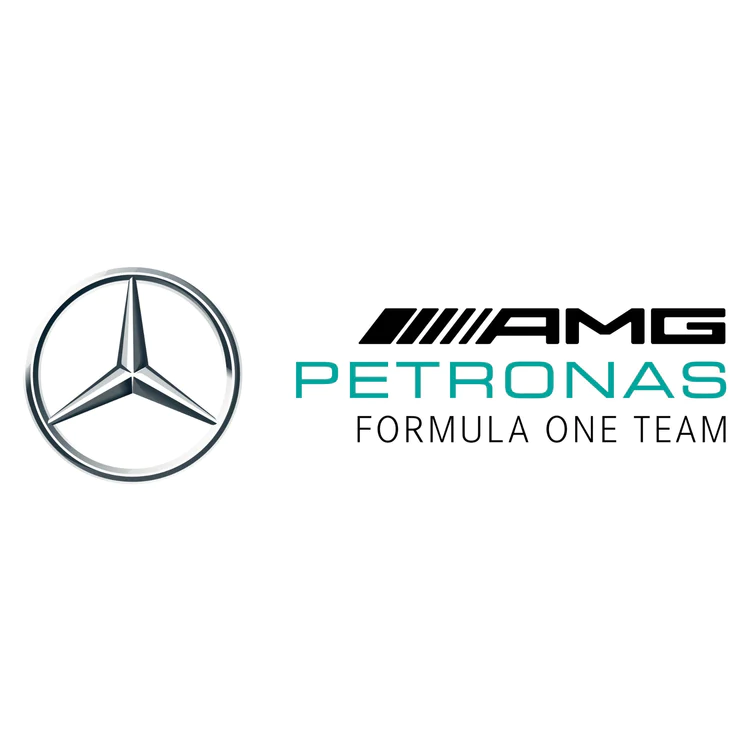

Top 3 tallia tällä hetkellä
Päivitetty 12.3.
Kisoja ajettu: 2


Red Bull Racing Honda RBPT
Red Bull Racing osallistui F1 kisaan ensimmäisen
kerran vuonna 1997.
Tallille on sen jälkeen tullut 6 maailmanmestaruutta.
Kuljettajat tällä kaudella ovat Max Verstappen
ja Sergio Perez.
Scuderia Ferrari
Ferrari on osallistunut kisoihin jo vuonna 1950. Sille on kertynyt 16 maailmanmestaruutta.
Ensimmäiseksi kisoissa Ferrari on sijoittunut 244 kertaa.
Kuljettajat tällä hetkellä ovat Carlos Sainz ja Charles Leclerc.
Mercedes
Mercedes on hieman uudempi talli kuin Ferrari, vuodelta 1970.
Maailmanmestaruuksia on 8 joista 7 on ajanut Lewis Hamilton.Toinen kuski Mersulla on George Russel.